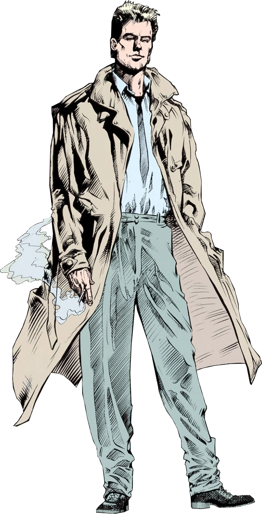

Informações do Constantine
Voltar
Equipes DC

Criação do Constantine
Constantine é um personagem fictício dos quadrinhos e protagonista da série Hellblazer, publicada
pela DC Comics. Ele foi criado por Alan Moore, Stephen R. Bissette e John Totleben
fazendo sua primeira aparição em Swamp Thing #37, lançada em 1985.
O Personagem Constantine
Constantine, cujo nome completo é John Constantine, é um ocultista e detetive paranormal. Ele é
conhecido por sua personalidade sarcástica, cinismo e habilidades místicas. Constantine
é um anti-herói complexo, muitas vezes lutando contra forças sobrenaturais enquanto
lida com seus próprios demônios internos.
Constantine é um exorcista talentoso e um manipulador habilidoso da magia negra. Ele possui conhecimento
extenso sobre o oculto e é capaz de lançar feitiços, realizar rituais mágicos e invocar entidades
sobrenaturais para obter informações ou ajuda. Além disso, Constantine é um mestre em enganação e
manipulação, usando sua astúcia e inteligência para derrotar seus inimigos.
Quadrinhos Importantes do Constantine
Constantine teve várias histórias importantes nos quadrinhos, explorando seu mundo sobrenatural e seus confrontos com forças malignas. Aqui estão alguns dos quadrinhos mais relevantes do personagem:
"Hellblazer: Dangerous Habits" (1991):
Escrito por Garth Ennis e ilustrado por Will Simpson, essa história mostra Constantine enfrentando sua própria mortalidade quando é diagnosticado com câncer de pulmão.
"Hellblazer: Original Sins" (1992):
Escrito por Jamie Delano e ilustrado por John Ridgway, essa história apresenta o personagem e estabelece o tom sombrio e sobrenatural de suas aventuras.
"Hellblazer: Dangerous Habits" (1988-2013):
Esta longa série de quadrinhos acompanha as várias missões de Constantine enquanto ele enfrenta demônios, fantasmas e outras ameaças sobrenaturais.
Adaptações em Outras Mídias
Além dos quadrinhos, Constantine também teve várias adaptações para outras mídias. Aqui estão algumas das mais notáveis:
Filme "Constantine" (2005):
Interpretado por Keanu Reeves, o filme traz Constantine como um exorcista lutando contra as forças do inferno na tentativa de ganhar sua redenção.
Série de TV "Constantine" (2014-2015):
Matt Ryan interpreta Constantine nesta série que segue as aventuras do detetive paranormal enquanto ele enfrenta ameaças sobrenaturais e busca redimir sua alma.
Habilidades do Constantine
Constantine possui uma série de habilidades ocultas e conhecimentos místicos que o tornam um poderoso ocultista. Aqui estão algumas de suas principais habilidades:
Magia Negra:
Constantine é um manipulador habilidoso da magia negra, capaz de lançar feitiços, realizar rituais mágicos e invocar entidades sobrenaturais.
Conhecimento sobre o Oculto:
Ele possui um vasto conhecimento sobre o mundo sobrenatural, incluindo criaturas místicas, magia e rituais.
Enganação e Manipulação:
Constantine é um mestre em enganação e manipulação, usando sua astúcia e inteligência para obter vantagem sobre seus adversários.
Exorcismo:
Ele é habilidoso em realizar exorcismos e banir entidades malignas de corpos ou lugares possuídos.
Proteção Mística:
Constantine pode criar e lançar encantamentos para proteger-se de ataques sobrenaturais.
Conclusão
Constantine é um personagem fascinante que mergulha no mundo do oculto e enfrenta forças sobrenaturais enquanto lida com suas próprias falhas e arrependimentos. Sua natureza complexa e habilidades místicas o tornam um dos personagens mais icônicos da DC Comics. Desde seus quadrinhos originais até suas adaptações para o cinema e a televisão, Constantine continua a encantar os fãs com suas histórias sombrias e cheias de suspense.